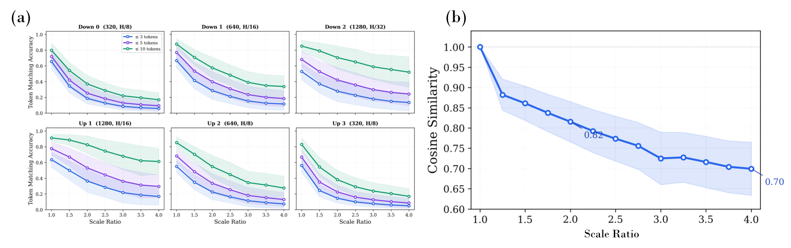
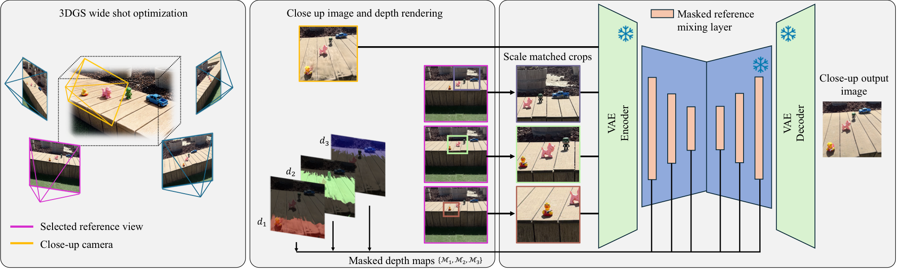
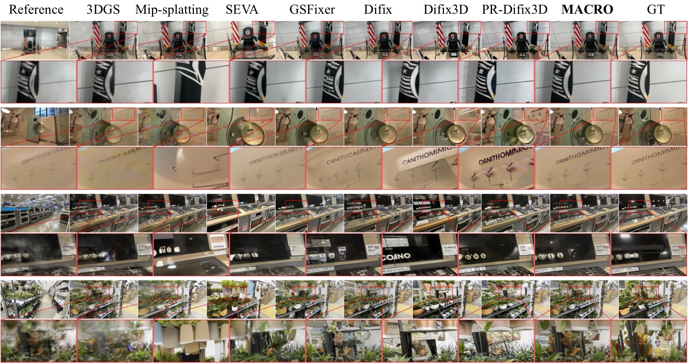
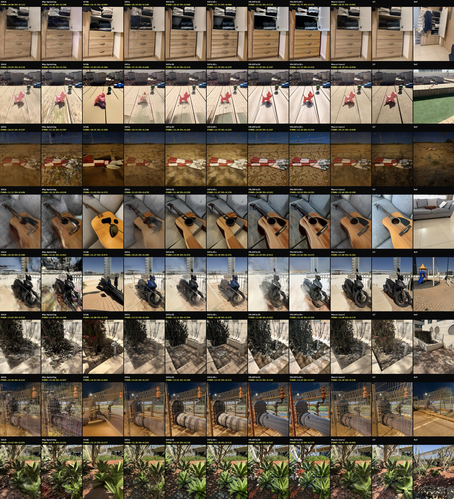

Close-up rendering, zooming into a scene well beyond any training camera, is important for virtual production and interactive 3D content, yet remains an open challenge. 3D Gaussian splatting (3DGS) enables high-fidelity, real-time novel view synthesis, but its rendering quality degrades at close range. Recent diffusion-based methods that enhance the rendering by conditioning on reference images from the training set produce significant artifacts in this setting. We analyze this failure and identify its root cause: the scale gap between the close-up and reference views. We show that the features in reference-conditioned enhancement models are not scale-invariant, causing cross-view attention to retrieve incorrect correspondences when the same content appears at different scales, and that this mismatch cannot be corrected in latent space because the VAE encoder is not scale-equivariant. Building on this analysis we introduce MACRO, Multi-plane Attention for Closeup Render Optimization, a training-free method for high-quality close-up novel view synthesis from 3DGS. MACRO resolves the scale gap by leveraging the scene's known 3D structure: it decomposes the close-up into depth planes, crops and resizes references in image space to match the scale of each plane before encoding, and applies a depth-aware attention mask so each token attends only to scale-matched references. The method requires no architectural changes or additional training. We further contribute two new close-up novel view synthesis benchmarks, the first standardized evaluation protocol for this setting, and demonstrate state-of-the-art results on both, outperforming existing 3DGS and diffusion-based methods on both reconstruction and perceptual metrics.
Reference-conditioned enhancement fails at close range because the close-up and the wide-shot references show the same content at very different scales. (a) As the scale ratio between a query and its reference grows, cross-view attention increasingly retrieves the wrong correspondences — token-matching accuracy drops sharply across every UNet block. (b) This cannot be fixed in latent space: the VAE encoder is not scale-equivariant, so latent cosine similarity between the same content at different scales degrades steadily with the scale ratio.

MACRO leverages the scene's known 3D structure to close the scale gap, with no architectural changes or additional training. Given a close-up camera and a 3DGS trained on sparse wide shots, we render the close-up and its depth, then decompose the close-up into M depth planes. For each plane we crop and resize the selected references in image space so their content matches the plane's scale (scale-matched crops) before encoding them with the frozen VAE. A depth-aware attention mask in the reference-mixing layers then routes each token to attend only to the references matched to its depth plane.


DL3DV-Closeup: MACRO recovers fine structure and legible text that all prior 3DGS and diffusion baselines miss.

MobileClose-10 (iPhone captures): MACRO produces sharp close-ups that stay faithful to the ground truth. Per closeup metrics are also reported (PSNR and DreamSim).
Rendered 3DGS camera trajectories (no re-training). The camera zooms from a training-view wide shot down to the close-up and back out, lingering on the close-up. Each tile shows the raw 3DGS render, DiFix, and MACRO side by side.
@article{hodos2026macro,
title = {MACRO: Training-free Multi-plane Attention for Closeup Render Optimization},
author = {Nitzan Hodos and Roy Amoyal and Lior Fritz and Ianir Ideses and Sagie Benaim and Netalee Efrat},
year = {TBD},
journal = {TBD},
eprint = {TBD},
archivePrefix = {arXiv},
primaryClass = {TBD},
url = {TBD}
}